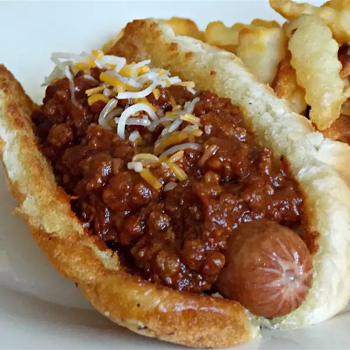

Hot Dogs with Coney Sauce

A classic recipe for hot dogs with homemade Coney sauce
Top with shredded cheese and chopped onions.
Ingredients
- 2 tbsp olive oil
- 1 pound ground beef
- 12 oz of chili sauce
- 1/2 cup water
- 1 package of chili seasoning mix (approx. 1.25 oz)
- 1 tbsp yellow mustard
- 1 tsp worcestershire sauce
- 1/2 tsp onion powder
- 6 hot dogs
- 6 hot dog buns
Instructions
- Heat oil in a large skillet over medium-high heat.
- Cook and stir beef in hot skillet until browned and crumbly, about 5 to 7 minutes.
- Add chili sauce, water, chili seasoning, mustard, worcestershire sauce, and onion powder. Bring to a boil.
- Reduce heat and simmer until Coney sauce is thickened, about 30 minutes.
- Place hot dogs into a large pot/saucepan with salted water. Bring to a boil and cook until hot dogs are heated through, 5 to 7 minutes.
- Place 1 hot dog in each bun and top with Coney sauce. Serve immediately.
Return to Main Page